Поебдителем в мужской одиночной сетке стал 19-ти летний Карлос Алькарас из Испании. Напомним, что он одним из самых молодых триумфаторов Юс опен. В финале теринра он одержал волевую победу над норвежцем Каспером Руудом в 4 сетах.
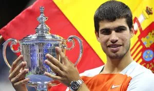Победительницей среди женщин стала первая сеяная турнира Ига Швёнтек из Польши. Она оказалась сильнее Онс Жабер из Туниса в 2 сетах: 6:2 7:6. Полячка выиграла третий ТБШ в карьере и первый из них не на грунте. А Жабер проигрывает второй финал туринра большого шлема подряд. На Уимблдоне она проиграла казахстанке Елене Рыбакиной из Казахстана.
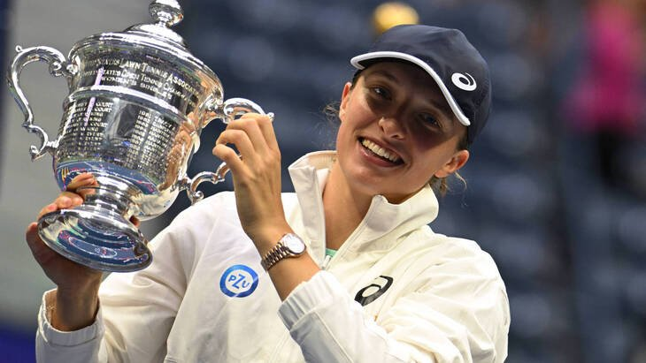Дальше пройдёмся по парным рязрядам. Победителями в мужском парном рязряде стали Раджив Рам и Джо Солсберри. Для них это уже пятый большой шлем в карьере. В финале они обыграли Нила Скупски и Уэсли Коольхова. Триумфаторами женского парного Юс опен ожидаемо стали чешки Барбора Крейчикова и Катерина Синякова. В финале они оказались сильнее Кэти Макнелли и Тейлор Таунсенд, переиграв их в 3 сетах. К 26 годам обе выиграли уже по 6 турниров большого шлема. Так же можно сказать про микст. победителями стали австралийцы Сторм Сандерс и Джон Пирс, переигравшие в финале пару Кристен Флипкенс и Эдуара Роже-Васселина . Победители Юс Опен получилили по 2600000$ призовыми, что является рекордом за всю историю существования Юс Опен.
Мы расскажем вам о всех самых главных событий турнира. Интересные матчи, главные вылеты, завершения карьер, и так далее.
Перед началом Юс Опен 23-кратная чемпионка турниров большого шлема заявила, что этот турнир уже официально станет для неё последним. И она действительно попрощалась с теннисом проиграв в третьем круге Айле Томлянович из Австралии в трёх сетах. До этого она обыграла Данку Ковинич в первом круге 6:3 6:3, А во втором круге сенсационно разделалась с второй сеяной турнира Анет Контавейт из Латвии в трёх сетах чем подарила невероятный матч для всех любителей тенниса, особенно для американской публики. После её поражения на корте им. Артура Эша была устроена церемония “прощания”. Напомню, что открытый чемпионат в США Уильям выигрывала 6 раз.
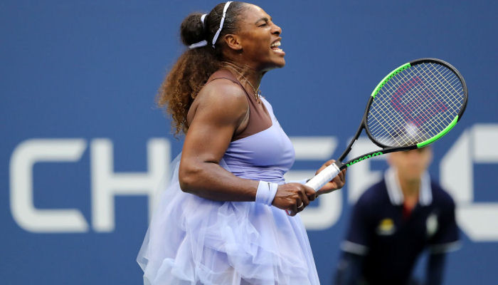Первый сеяный турнира в мужской сетке Даниил Медведев вылетел с турнира в 4-ом круге от Ника Кирьоса. Австралиец был сильнее был в 4 партиях. Россиянин теряет первую строчку рейтинга, отдав её победителю турнира- Карлосу Алькарасу. Чтобы сохранить первую строчку рейтинга Медведеву надо было выигрывать титул, чтоб не потерять очки за прошлую победу, чего он добиться не смог.
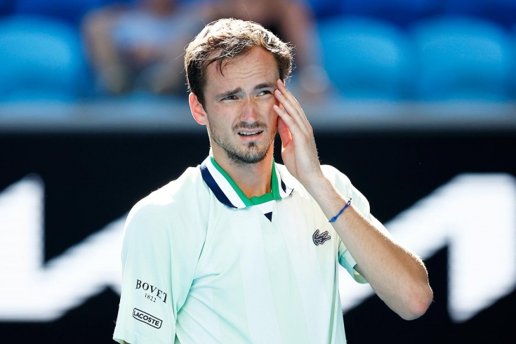Рафаэль Надаль не уверенно дошёл до четвертого круга, проиграв по ходу 2 партии. Френсис Тиафо был сильнее испанца в 4-ом круге, проиграв в 4 сетах. Стоит отметить, что он был одним из претендентов на первую строчку рейтинга, однако ранний вылет не позволил ему вернуться на вершину рейтинга. Однако, Рафа не расстраивается, ведь он готовится к рождению сына!
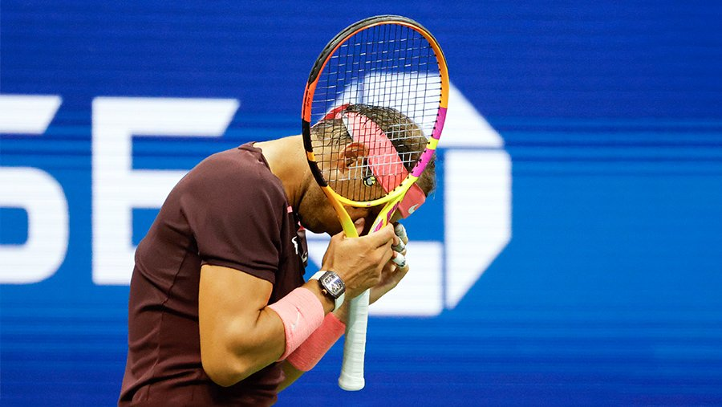В первом круге в мужской части сетки случилось 2 серьёзные сенсации: Вылет Циципаса и Тейлора Фритца. Циципас был претендентом на первую строчку по окончанию турнира, но поражение в первом круге конечно-же не оставило ему никаких шансов для этого. Его обидчиком стал колумбиец Галан, переигравший грека в 4 сетах. 10 сеяный, Тейлор Фритц, так же являлся одним из претендентов на титул, во первых, он был в замечательной форме, уверенно доходил до решающих стадий до старта Юс опен. Во-вторый, он играл у себя дома, и являлся одним из гланых любимчиков публике. Однако по неппонятнм причинам он уступил Брендону Холту в 4 сетах, чем разочаровал всех своих болельщиков. А вот в женской сетке сенсаций случилось по больше. В первом круге проиграла действующая победительница туринира- Эмма Радукану Её обидчицей стала француженка Элизе Корне, разобравшаяся с опоненткой в 2 сетах. Однако, большей неожиданностью стали вылеты других девушек. Двухкратная победительница турниров ТБШ, румынка Симона Халеп Сложила ракетку после поражения в первом круге от украинки Дарьи Снигур в трёх сетах. Симона была третьей сеяной, однако не смогла пройти даже первый круг. Елена Рыбакина, победительница Уимблдона 2022 так же неожиданно проиграла в первом круге. Казахстанка уступила Кларе Бюрель в 2 сетах. Так же первый круг подарл американской публике матч с невероятной "вывеской": Наоми Осака- Даниэль Коллинз. Осака- четырёхкратная победительница ТБШ, дважды победительница Юс Опен. А Даниэль Коллинз, американка, главная любимица и надежда американской публики. В драмматичном матче сильней оказалась Коллинз, а Наоми вылетела в первом круге. 10-я сеяная, Дарья Касаткина из России сенсационно уступила в первом круге Хариетт Дарт в 3 сетах. Россиянка является одной из самых стабильных теннисисток в этом году. Так же американскую публику разочаровала Аманда Анисимова, которая на протяжении всего года показывала достойный уровень игры, но почему то уступила в первом круге. Юлия Путинцева из Казахстана переиграла 24-ю сеяную так же в 2 сетах.
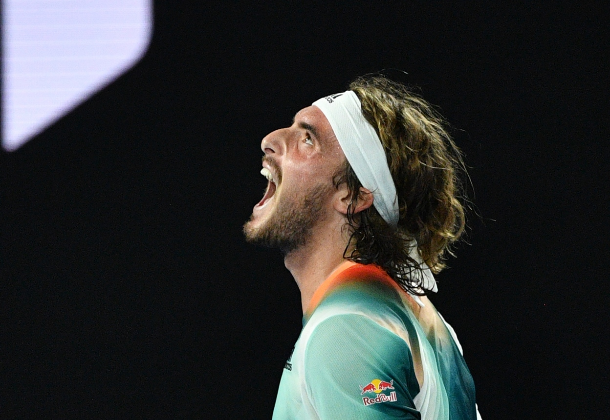 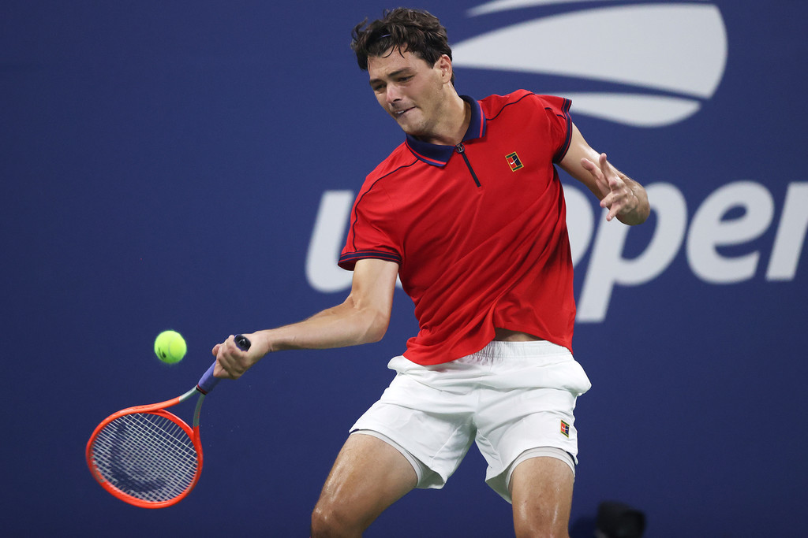 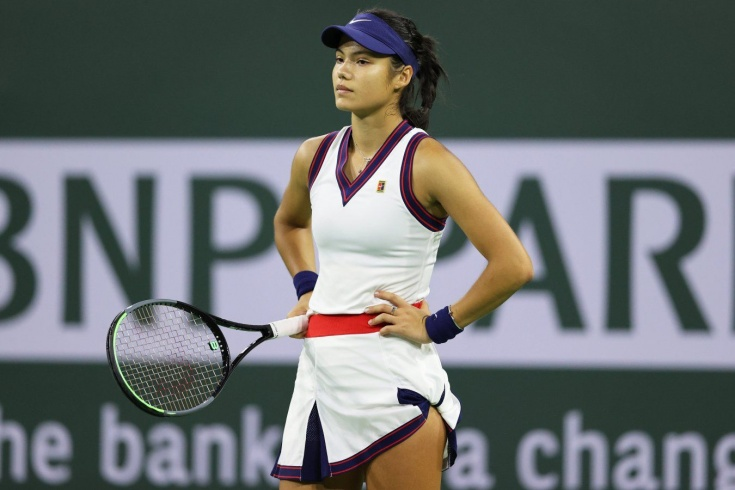 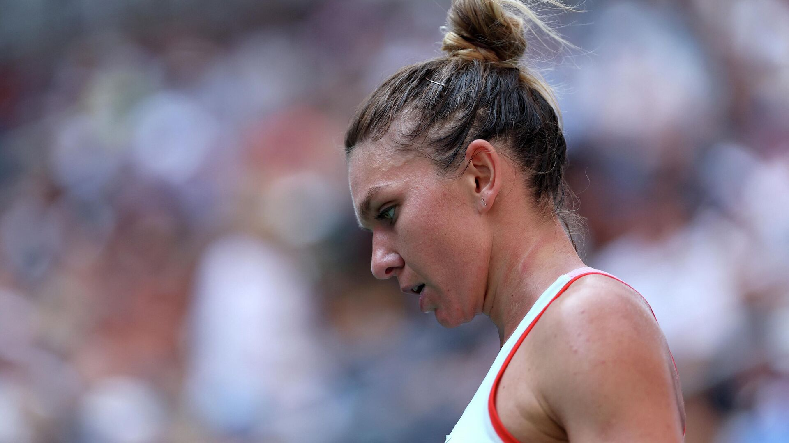 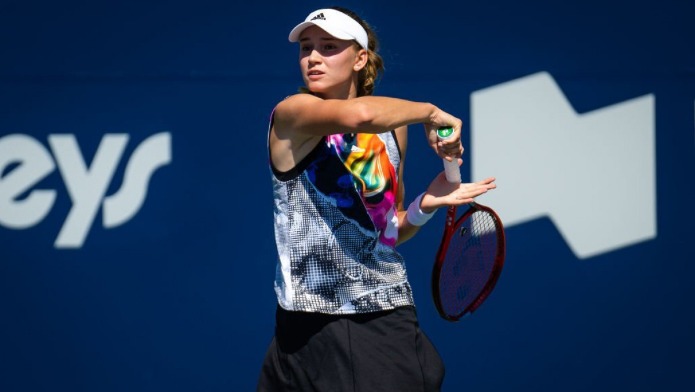 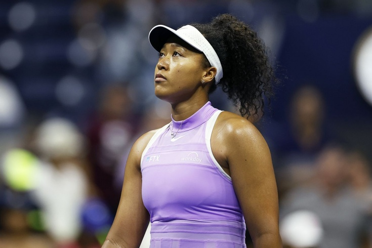 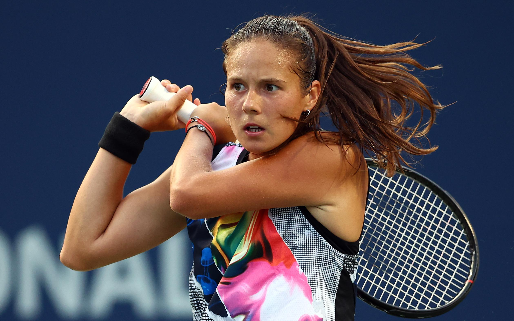 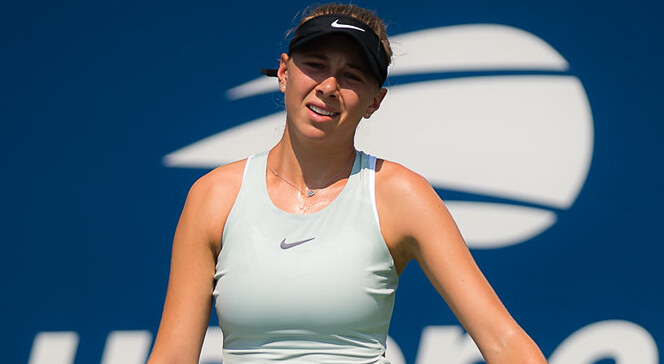 А вот и топ-3 лучших матчей в мужском и женском разряде на наш взгляд!
Начнём с мужского разряда
Российско-австролийское дерби длилось более 5 часов в четвертьфинале турнира. игроки подарили нам невероятные розыгрыши, накал страстей, великолепные подачи и красивую битву!
Испанец Давидович-Фокина и итальянец Берретини показали не детскую битву в матче 4-го круга. Зрелищние рызыгрыши и рвение к победе украсили матч, и в этой борьбе чуть сильнее оказался Матео Берретини.
Алькарас и Синнер выдали один из самых длинных матчей за туринр. два "некстгена" удивили весь мир своей игрой. Матч завершился, когда в Нью-Йорке было уже 2:50 ночи! Два молодых игрока показали невероятный уровень тенниса, показав всему миру, кто будет возглавлять рейтинг уже совсем скоро!
Матч, в котором Серена Уильямс окончательно попрощалась с теннисом. Айла Тослянович переиграла опонентку в трёх сетах, 2 из которых получились максимально крупными. Однако, легенду не хватило на 3-ий сет, и она проиграла его со счётом 6:1, но по уровню накала страстей матч может сразнится с мужским!
В матче третьего круга сошлись две двухкратные чемпионки большого шлема- испанка Гарбинье Мугуруса и чешка Петра Квитова. Чемпионки выдали достаточно странный матч, но он получился очень интересным, до конца было не понятно, кто выйдет победителем в этом матче. Но в третий круг вышла Квитова, победив в очень тяжелом тайбрейке.
Третья сеяная турнира Мария Саккари во втором круге встретилась с китаянкой, прошедшей квалификацию Сюй Ван. Саккари, являясь очевидным фаворитом, ожидаемо выиграла первый сет, но молодая и дерзкая китаянка выдала восхитительную игру в последующих 2 сетах, чем смогла выбить из турнира третью сеяную уже во втором кругу.
В женской сетке до турнира первой ракеткой мира была Ига Швёнтек. Полячка сохранила её, выиграв турнир. Вторую строчку на данный момент является финалистка турнира Онс Жабер.
Третья- эстонка Контавейт, а четвёртая- Паула Бадоса из испании.
А вот в мужской части сетки борьба за первую строчку рейтинга шла куда более ожесточённее. Алькарас, Медведев, Рууд, Надаль и Циципас по окончанию турнира могли занять первую строчку рейтинга.
Первым свои шансы на первую строчку угробил Циципас, проиграв уже в первом круге. В четвёртом круге оступились Медведев и Надаль. Если для Медведева это уже точно значило потерю первой строчки,
то для Надаля оставались шансы. Всё зависило от Рууда и Алькараса. Насколько долеко бы они прошли. Чем раньше они выбыли бы, тем лучше было бы для Рафы. Но не тут-то было. Оба теннисиста вышли
в финал, и разыгрывали не только финал Турнира Большого Шлема, но и первую строчку рейтинга. Как вы уже осведомлены, победителем в этой дуэли оказался Карлос Алькарас, расположився на первой строчке рейтинга.
Юс Опен 2022- турнир, подаривший много интриг и невероятных матчей. Не думаю, что турнир мог оставить любителей тенниса равнодушными. Спасибо, что прочитали эту статью, скорых встреч!